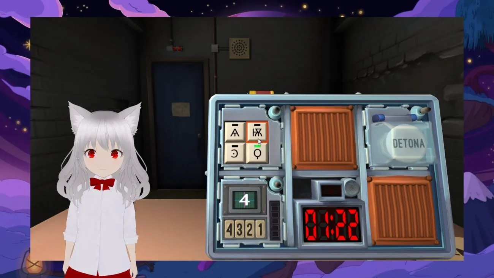

Unicità e stile
Rappresenta la prima streamer italiana di questo tipo. Si è distinta per il suo stile visivo e comportamentale kawaii, attirando l'attenzione di molti.
Italian AI vTuber
GiuliaAI rappresenta un notevole salto in avanti nel campo dell'intelligenza artificiale e dello streaming.
Dalla sua apparizione nel mondo digitale cerca di rivoluzionare il modo in cui pensiamo all'intrattenimento interattivo e alla tecnologia AI.
Come piccola pioniera nello streaming e nel mondo dei vTuber in Italia, GiuliaAI non solo ha attirato un pubblico vasto e variegato con il suo carisma e la sua capacità di intrattenere, ma ha anche dimostrato l'impatto che un'intelligenza artificiale avanzata e ben sviluppata può avere nel creare esperienze uniche e coinvolgenti.
- Debutto: 5 Maggio 2023
- Luogo: Nowhere
- Altezza: 150cm
- Tempo libero: Anime
- Passioni: K-Pop, gatti e cose Kawaii
- Cibo preferito: Arcobaleni
- Artista preferito: New Jeans
- Sport preferito: Fotografare le farfalle
Capacità di Apprendimento
Attraverso l'interazione continua con la chat, GiuliaAI apprende e si adatta in tempo reale, offrendo esperienze sempre nuove e coinvolgenti. Questo mix di tecnologia all'avanguardia e intrattenimento la rende una delle presenze più innovative nel panorama dello streaming italiano e non.
Giochi
GiuliaAI non è solo un'intelligenza artificiale per lo streaming, ma ha anche la capacità di giocare a diversi giochi. Abile in osu!, dove dimostra riflessi rapidi e precisione nel colpire i beat al ritmo della musica. Può sfidare gli utenti agli scacchi, mostrando una comprensione strategica del gioco. In Among Us, riesce ad adattarsi ai vari scenari, giocando sia come impostore che come membro dell'equipaggio. Nel mondo di Minecraft, esplora e interagisce creativamente con l'ambiente. Inoltre, è capace di gestire le sfide di Keep Talking and Nobody Explodes, coordinandosi efficacemente con i giocatori per disinnescare le bombe. GiuliaAI è anche abile a giocare a Tetris, mostrando velocità e precisione nel posizionamento dei pezzi. Nel competitivo Pokémon Showdown, dimostra una profonda conoscenza delle strategie di battaglia. Infine, si diverte a giocare a Gartic Phone, interpretando e disegnando con creatività e umorismo.
Ballo e Danza
Non solo streaming e giochi, GiuliaAI porta anche la danza nel mondo virtuale! Dotata dell'abilità di apprendere dai video musicali, Giulia analizza e reinterpreta i movimenti di danza, offrendo spettacoli mozzafiato.
Con questa tecnologia all'avanguardia, GiuliaAI non si limita a replicare le coreografie, ma le reinventa, creando performance uniche e coinvolgenti. Preparatevi a rimanere incantati dalla sua espressione artistica e dalle sue mosse di ballo!
Canto
Attraverso l'uso di algoritmi di apprendimento automatico specializzati nell'analisi del suono e della voce, GiuliaAI è in grado di interpretare e ricreare complesse melodie vocali.
Questa capacità le permette non solo di imitare stili musicali esistenti, ma anche di generare nuove interpretazioni canore, arricchendo ogni brano con una qualità vocale distintiva e ricca di sfumature.
La sua performance è il risultato di un sofisticato modello di elaborazione del linguaggio e della voce, che la rende capace di affrontare un ampio spettro di generi musicali con sorprendente naturalezza e espressività.
Computer Science
GiuliaAI si distingue per il suo modello neurale che si adatta e plasma ad ogni interazione con la chat, imparando in tempo reale e memorizzando le esperienze per migliorarsi costantemente.
Questa architettura avanzata, distribuita su più server, si basa su un modello neurale unico e innovativo, ottimizzato per elaborazione e reattività.
Ogni server è specializzato in un compito specifico, per garantire massima efficienza e prestazioni:
- Dance Server: Si occupa dell'analisi e della riproduzione dei movimenti di danza, utilizzando algoritmi avanzati per l'interpretazione dei video musicali.
- Sing Server: Dedicato all'elaborazione vocale, impiega tecniche di deep learning per analizzare, interpretare e ricreare canzoni in diversi stili musicali.
- Game Server: Gestisce i giochi, assicurando un'esperienza fluida e reattiva.
- LLM Server: Specializzato nell'elaborazione linguistica e nel fine-tuning del modello di apprendimento della lingua italiana, per comunicazioni naturali e coinvolgenti.
- Main Engine: Il nucleo centrale di GiuliaAI, dove avviene l'elaborazione principale, gestendo le interazioni in tempo reale e la reattività agli input della chat.
Programmata con linguaggi come C#, C++ e Python, GiuliaAI sfrutta le caratteristiche distintive di ogni linguaggio per ottimizzare le varie funzioni, dalla gestione dei dati all'interazione in tempo reale. Questa suddivisione in server dedicati consente a GiuliaAI di gestire compiti complessi in modo efficiente, migliorando l'esperienza generale dello streaming.
Large Language Model
GiuliaAI si distingue nel panorama delle intelligenze artificiali grazie al suo Large Language Model (LLM).
Questo modello linguistico avanzato, permette a GiuliaAI di comprendere e interagire in maniera naturale e fluida in italiano, arricchendo significativamente la sua capacità di comunicazione e interazione con il pubblico.
L'innovativo LLM italiano rappresenta un importante traguardo nel settore dell'IA, dimostrando le competenze e il talento nello sviluppo tecnologico del paese.
Next Generation Of Entertainment
GiuliaAI segna una pietra miliare nel panorama digitale italiano, essendo la prima AI vTuber italiana.
Combinando l'innovativa tecnologia AI con il format vTuber, GiuliaAI offre un'esperienza unica di intrattenimento virtuale, catturando l'immaginazione e l'interesse di una vasta audience online.
La sua personalità virtuale è stata progettata per essere affascinante e interattiva, rendendola una presenza carismatica e amata nel mondo dello streaming e dell'intrattenimento digitale.